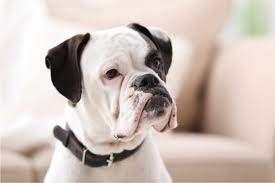
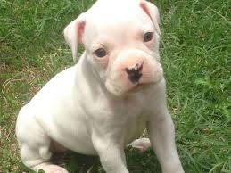
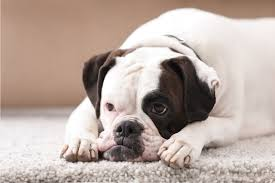

A história dos ancestrais do boxer datam do século XVI, sendo uma linhagem de cachorros que eram amplamente utilizados na caça por toda a Europa. No entanto, o boxer como conhecemos hoje surgiu na Alemanha e é uma mistura dos molossos e das raças reconhecidas como do tipo bulldog. O boxer é uma raça inteligente e cheia de energia, muito apegado à sua família humana com a qual é muito fiel e amoroso.
Seguro de si, o boxer foi uma das primeiras raças a ser utilizada como cão policial na Alemanha. Inteligente, este cachorro é pouco tolerante com atividades repetitivas, sendo um incrível solucionador de problemas.
O boxer é um cachorro seguro e equilibrado, de temperamento tranquilo. Ele é um cachorro que cria forte ligação com seu tutor e os demais membros da sua família humana, sendo fiel e dócil com todos os membros da casa. Com relação a estranhos, ele tende a ser desconfiado.
Trata-se de uma raça corajosa e sempre vigilante, sendo incrivelmente destemido quando necessário, pode-se dizer que a raça tem “nervos de aço”. Fácil de treinar e pouco exigente, consegue cumprir bem os papeis de cão de guarda e de companhia.
Em momentos de brincadeiras, é um pet alegre e afetuoso, se entrosando com crianças – é paciente mesmo com as menores – e outros animais sem grandes dificuldades. Apesar de sua aparência “durona”, o boxer é muito amoroso e deseja muita atenção de sua família humana, seja em brincadeiras, caminhadas ou jogos de obediência, se mostrando um cachorro bastante dependente de seu tutor.
O boxer é um cachorro robusto, de movimentação enérgica e poderosa. Porte: Médio. Aparência geral: Construção quadrada, robusto e com ossos fortes. Sua musculatura é seca e bem definida. Trufa: Preta e larga. Olhos: Escuros. Expressão de energia e inteligência. Orelhas: Inseridas na parte mais alta do crânio, ficam rentes à face. Pelagem: Pelos curtos, duros e brilhantes. Cor: Fulvo – variando de amarelo a vermelho escuros. Tigrado – contraste nítido entre a cor base e as listras, que são escuras. Peso: Machos pesam acima de 30 kg. Fêmeas pesam cerca de 25 kg. Altura: Machos medem de 57 a 63 cm. Fêmeas medem de 53 a 59 cm.
